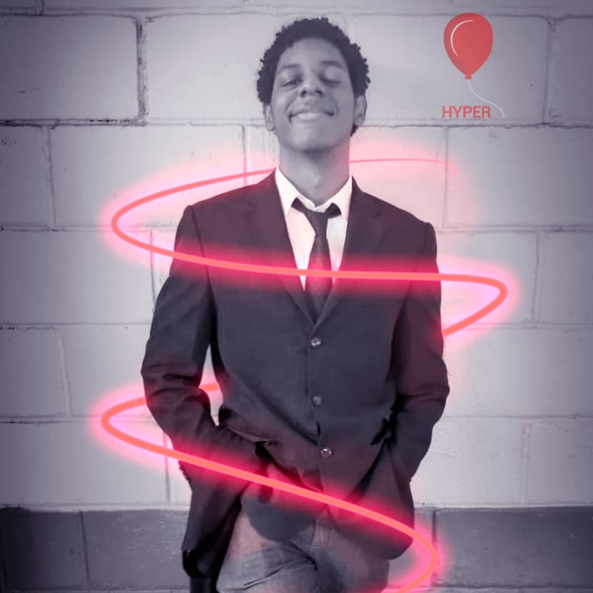

Desde pequeno gostei de tecnologia e sempre procurei saber mais sobre. Mas de fato, manifestei todo
meu potencial durante o curso que fiz na SAGA e meu Técnico em Informática.
Desde então, estudo Programação, Design, Gerenciamento de Banco de Dados.
Meus interesses, além da tecnologia, são artes cênicas, livros, história e organização social.
Carioca, formado em Ciência da Computação, fui à São Paulo com o propósito de novos
desafios da vida profissional. Noivo, livreiro, cinéfino, torcedor do Vasco da Gama e
cccccccccccccccccccccccccccccccccccc